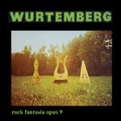

| Artist: | Wurtemberg |
| Title: | Rock Fantasia Opus 9 |
| Label: | Musea FGBG 4401.AR |
| Length(s): | 37 minutes |
| Year(s) of release: | 1980/2002 |
| Month of review: | [08/2002] |
| 1) | Rockopus 7 | 5.39 |
| 2) | Sous-titre | 2.10 |
| 3) | Berceuse Gratinée - Fa&ihat;tes Le Mur | 2.24 |
| 4) | Préxe Et Danse - Fa&ihat;tes L'Humour | 3.32 |
| 5) | Allemandes | 2.21 |
| 6) | Concerto Pour Un Minot | 5.37 |
| 7) | Invitation - Vois Avez Bien Trois Minutes? | 3.04 |
| 8) | Rockopus 1 | 7.13 |
| 9) | Jésus Qua Ma Joie Demeure - Cantate 147 | 3.54 |
| 10) | Neuvième Symphonie - Extrait | 1.51 |
In Sous-Titre, the acoustic guitar takes the fore with a somewhat merry, but understated main melody. I guess it is also here that the psaltery can be heard. The twangy sound is used instead of the guitar.
Berceuse Gratinée - Fa&ihat;tes Le Mur and Préxe Et Danse - Fa&ihat;tes L'Humour are proably sister (or brother) tracks. The first of these is a somewhat hazy flute dominated track built on a strong telling theme. The music can easily be said to tell a story The music continues as strong as ever, in the lighter second part. The very high sound seems to be made by something like violin, but maybe this is the soprano psaltery. Again the music borders on the classical, with maybe a short nod to Beatles and then to seventies rock, say Procol Harum in which also the organ plays a strong role. Very good.
Allemandes is more typically folky track, although it seems the guys are also putting in some didgeridoo like sounds. The music is a bit too careful here, with the flute being doubled by the psaltery.
In Concerto Pour Un Minot, the piano is back to play some sweet themes. This is in fact a rather sweet track on the whole with lots of flute as well. The music really dances, but then the rock comes into it a bit more, in fact the guys are starting to swing now. Maybe not such a good idea after all. For the rest, this is still a good track with even some electric guitar. Focus is a good reference here, the same feel, more or less the same guitar sound.
Invitation - Vois Avez Bien Trois Minutes? opens with acoustic guitar and has a strong hippy feel. Like Allemandes it is playful and maybe a bit too careful in its composition and execution.
Rockopus 1 is the final track of the original album, which is none too long. Again strong runs on piano with a certain Banks influence (as on earlier tracks where quick runs of piano occurred) and this time also some distorted, but still melodic guitar. The middle part features some fast rolling drums and the music is typical progressive rock from the seventies. Energetic and frantic.
The bonus tracks are Jésus Qua Ma Joie Demeure - Cantate 147 and Neuvième Symphonie - Extrait. The first was written by Bach. The first is a bit noisy and is quite well-known, even to the likes of me. The psaltery or lyre (whatever) adds something new here, but I wouldn't call it beautiful. The Beethoven tune is alos not great: noisy and I don't like it. But hey, I am fed up with listening to the originals (more or less since I first heard them), so maybe that is the problem. Still, I certainly would not buy this cd for the bonus tracks.